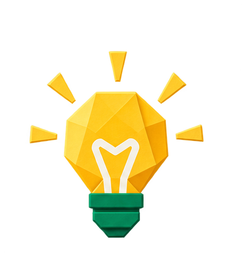
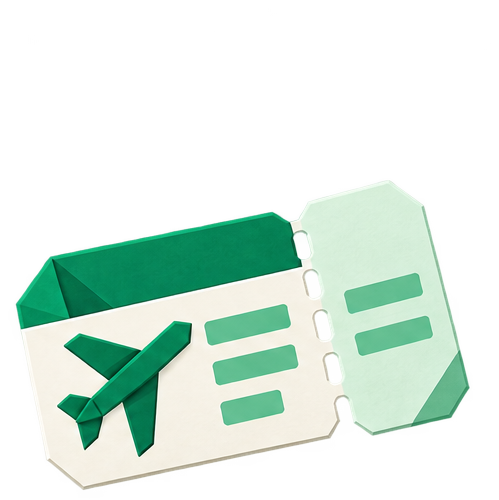

オーストラリアは物価が高く、特にホテルと外食、国内線の費用が旅の総額を左右する。国土が広く、都市間の移動は国内線が基本になる。チップが不要で、スーパーやフードコートを使えば、食費は抑えやすい。季節によって料金も大きく動く。

節約ポイント・日本の学期休み・長期連休を避けた春秋の閑散期に行くと、航空券が割安になる
・食事はフードコートとスーパーの総菜を活用すると、外食費を抑えられる
通貨は豪ドルで、ほとんどの店でカードのタッチ決済が使える。現金は市場や小さな店で少額あれば十分で、チップの習慣もない。日本円は使えないので、空港や両替所、ATMで必要な分だけ用意しよう。多めの現金は持ち歩かなくてよい。
ホテルやレストランなどカードが使える場所はカード払いする前提で、屋台・市場・交通機関など現金が必要になる分の目安です。足りなくなっても、なら現地ATMで気軽に引き出せて安心です。
海外でクレジットカードを使うたびに不正利用のリスクは高まります。筆者自身も海外渡航後に2回不正利用を経験したことをきっかけに、現在は海外ではWiseカードをメインに使うようにしています。チャージした分しか使えないため万が一の際も被害が限定的で、旅好きの友人たちの間でも最近かなり普及してきています。
日本からは羽田・成田からシドニー、メルボルンなどへ直行便が就航している。行きは約10時間で、夕方に出て翌朝に着く便が中心。ケアンズやゴールドコーストへは、直行便が限られる時期もあるため、乗継の候補も確認しておきたい。
航空券を比較・予約するなら、ほぼこれ一択！スカイスキャナーの公式サイトはこちら



予約タイミングの目安・日本の年末年始・GW・お盆は高騰、春秋は割安になりやすい
・直行便は夜出発の便が多く、現地の朝に着くため、ホテルのチェックイン時間も確認
・ケアンズ・ウルルは国内線の乗継が必要になることが多い
オーストラリアの宿は、シドニーとメルボルンは電車やトラムの駅に近い中心部を選ぶのが基本。治安は良好だが、夜の繁華街の端は静かで暗いこともある。ケアンズやウルルは、ツアーの送迎が来る場所かどうかを確認して選ぶと安心です。
初めてなら、シドニーとメルボルンの中心部に泊まり、ケアンズやウルルは国内線で足を延ばす計画が定番。中心部は宿泊料金が高いので、ホテルが近い電車の駅を基準に探すと、移動も楽になる。
航空券・ホテル・SIM・持ち物まで全部まとめてチェック。
30カ国以上を旅した管理人が実体験をもとに作った持ち物リストもあります。